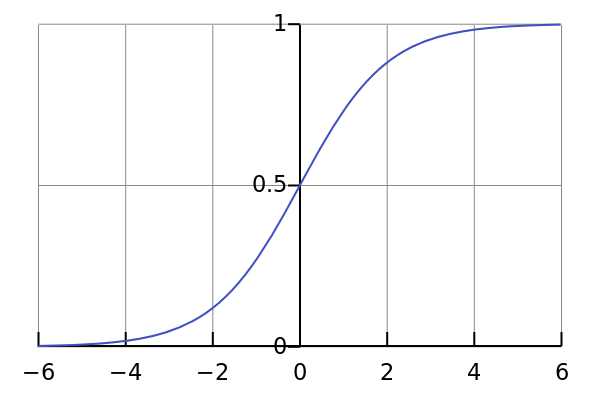

18. Logistic regression#
Consider a problem where we attempt to predict a binary output, i.e., the output variable \(Y\) can only take two possible values, say \(0\) or \(1\). For example, we may want to determine if a customer should be approved for a loan using various information (e.g., current amount of debt, credit score, etc.). Here, a linear regression model is likely to yield poor results. Even if we interpret the linear model as outputing a probability of approving the customer for the loan, observe that doubling the value of all predictors doubles the predicted probability (assuming the model has no intercept). This does not seem like an appropriate behavior in our context.
Logistic regression provides a different approach to the problem, with a focus on predicting the probability that \(Y\) is \(0\) or \(1\).
18.1. Bernoulli distribution and the sigmoid function#
Recall that a random variable \(Y\) has a Bernouilli distribution with parameter \(p \in [0,1]\), denoted \(Y \sim \textrm{Bernouilli}(p)\), if
A more concise way to write the above is
In logistic regression, we model the random variable \(Y | X =x\) (i.e., \(Y\) given that \(X\) is equal to \(x\)) as a \(\textrm{Bernouilli}(p)\) probability distribution, where \(p\) is a function of \(x\). The link between \(x\) and \(p(x)\) is provided by the logistic function (also called sigmoid function):
Observe that \(\sigma(x) \to 1\) as \(x \to \infty\) and \(\sigma(x) \to 0\) as \(x \to -\infty\).
{kind=link}

In logistic regression, we make the assumption that
where \(\beta \in \mathbb{R}^p\) is a vector of regression coefficients, and \(x \in \mathbb{R}^p\) is a vector of predictors. Since the probabilities need to add up to \(1\), we set \(P(Y=0 | X=x) = 1-P(Y=1|X=x)\). We therefore have
As a result, \(P(Y=1 | X = x) \approx 1\) when \(x^T \beta\) is large and positive, whereas \(P(Y=1 | X = x) \approx 0\) when \(x^T \beta\) is large and negative.
Using basic algebra, we can find the inverse of the logistic function: for \(y \in (0,1)\),
Here “log” is the logarithm in base \(e\). Define the logit function by
Since \(\textrm{logit}\) is the inverse of \(\sigma\) and since \(P(Y=1 | X=x) = \sigma(x^T \beta)\), we therefore have
In “gambling language”, the ratio
is the “odds” that \(Y=1\) against \(Y=0\). Thus, in logistic regression, the “log-odds” of \(Y=1\) depend on \(x\) linearly, i.e., \(\textrm{log-odds} = x^T\beta\).
18.2. Estimating the regression coefficients#
Since in logistic regression, we are assuming we have a probability model for \(Y\), it is natural to estimate the parameter \(\beta\) using maximum likelihood.
Maximum likelihood estimation (MLE)
Suppose \(X_1, X_2, \dots, X_n\) are observations of a probability distribution that depends on a parameter \(\theta\). For example, \(X_1, X_2, \dots, X_n\) could be the outcomes of flipping a coin. In that case, we would have \(X_i \sim \textrm{Bernouilli}(p)\), where \(\theta = p\) is the parameter (the probability that the coin lands on heads). The likelihood function it the probability of observing the data that was observed:
i.e., the probability that \(X_1=x_1\) and \(X_2 = x_2\) and \(\dots\) and \(X_n = x_n\), where \(x_1, x_2, \dots, x_n\) is the actual data that was observed when the experiment was performed. Notice that this is a function of theta. For example, if the \(X_i\)s represent \(n=100\) coin flips, the probability of observing \(49\) heads and \(51\) tails is very low when \(p\) is close to \(0\) or \(1\), but is very high when \(p \approx 1/2\).
The idea of the maximum likelihood estimation (MLE) method is to choose \(\theta\) to maximize the likelihood function, i.e., \(\theta\) is the value of the parameter that makes it the most likely to observe the data that was observed.
In the case of the coin flip, it is not hard to show that the MLE for \(p\) is the ratio of the number of heads observed by the number of coin flips. This is, of course, very natural. For other probability distributions where an estimator may not be obvious to guess though, the MLE approach provides a rigorous and systematic way to estimate the parameters of a probability model.
18.2.1. Digression: the MLE for the Bernouilli distribution#
Recall that if \(Y \sim \textrm{Bernouilli}(p)\), then \(P(Y=y) = p^y(1-p)^{1-y}\) for \(y=0,1\). Hence, if \(Y_1, \dots, Y_n \sim \textrm{Bernouilli}(p)\) are independent and identically distributed, then the associated likelihood function is
Observe that \(L(p)\) and \(l(p) := \log L(p)\) are maximized at the same point since \(\log\) is an increasing function. The function \(l(p)\) is called the log-likelihood function. When working out the MLE, it is usually easier to maximze \(l(p)\) as logarithms convert products into sums. Here, we have
Computing the derivative \(l'(p)\) and setting it to zero, it is not hard to show that \(l(p)\), and thus \(L(p)\), is maximized at
In other words, in the coin flip problem, the MLE for the probability of getting heads is the number of heads obtained divided by the number of coin flips, as expected.
18.2.2. Back to logistic regression#
To estimate the regression coefficients \(\beta\) in logistic regression, we can use a similar approach as above. Here, however, \(p\) depends on \(\beta\). For each observation \(x_i\), we have
The likelihood function for \(\beta\) is thus:
and the log-likelihood is:
This is the function that we need to maximize with respect to \(\beta\). Taking the derivative with respect to \(\beta_j\), we obtain:
Unfortunately, setting the derivatives to \(0\) does not yield a nice closed-form expression for \(\beta\) as before. We therefore need to use numerical methods (e.g., Newton’s method) to maximize the log-likelihood function and obtain the MLE for \(\beta\). This is implemented for us in packages such as scikit-learn.
18.3. Logistic regression with more than two classes#
So far in this chapter, we assumed the response variable is binary (i.e., it takes only two values). Logistic regression can be generalized when the response can take any of \(\{1,\dots, K\}\) values. In that case, we simply replace the Bernoulli distributio by the categorical distribution:
Each category has its own set of coefficients:
The regression coefficients can be estimated using maximum likelihood as in the binary case.
18.4. Generalized linear models#
Logistic regression can be significantly generalized. When \(Y \sim \textrm{Bernoulli}(p)\), observe that the expected value of \(Y\) is \(E(Y) = p\). Thus, in logistic regression, we assume
\(Y | X=x \sim \textrm{Bernouilli}(p)\).
\(\textrm{logit}(p) = \textrm{logit}(E(Y|X=x)) = x^T\beta\).
A whole class of models can be built using a similar construction. A generalized linear model (GLM) consists of
A probability distribution for \(Y | X=x\) from the exponential family.
A link function \(g\) such that \(g(E(Y|X=x)) = x^T \beta\).
Note that the exponential family is a large family of probability distributions. It includes most of the familiar probability distributions encountered in an undergraduate probability theory or statistics course (e.g., normal, exponential, log-normal, gamma, chi-squared, beta, Dirichlet, Bernoulli, categorical, Poisson, geometric, etc.). Generalized linear models can thus be used to construct models for data coming from all kind of distributions.
18.5. Penalized logistic regression#
As for linear regression, penalized version (e.g., with \(\ell_1\) or \(\ell_2\) penalties) can be constructed for logistic regression in the same spirit as Ridge and LASSO regression. In that case, instead of maximizing the log-likelihood function, we can solve one of the following optimization problems:
18.6. Logistic regression with Scikit-learn#
Constructing logistic regression models with Scikit-learn is very straightforward.
from sklearn.linear_model import LogisticRegression
The LogisticRegression object behaves in a similar manner as the LinearRegression object (fit, predict, score, etc.).
To illustrate, let us construct a logistic regression model for the classical Iris dataset.
from sklearn.datasets import load_iris
from sklearn.linear_model import LogisticRegression
from sklearn.preprocessing import StandardScaler
# Load iris dataset
X, y = load_iris(return_X_y=True)
# Scale the features
scaler = StandardScaler()
X_scaled = scaler.fit_transform(X)
# Create logistic regression model and fit it to data
clf = LogisticRegression(random_state=0)
clf.fit(X_scaled, y)
# Predict the labels and measure the model fit
clf.predict(X_scaled[:2, :])
clf.predict_proba(X_scaled[:2, :])
clf.score(X_scaled, y)
0.9733333333333334
We obtain a very good training accuracy.
Exercise
Repeat the above exercise with the Iris dataset, but first split the data into training and test sets. Train a logistic regression model on the training set and measure its accuracy on the test set.